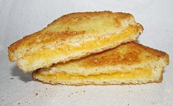

Grilled Cheese

Description
A grilled cheese is a hot sandwich made with cheese between two slices of bread, which is buttered on the
outside and cooked in a pan or on a griddle until the bread is golden brown and the cheese is melted. It
can be made with various types of cheese and bread, and some people also add ingredients like tomatoes or
mayonnaise for a gourmet version.
Ingredients
- Bread
- 1/2 tbsp. of butter for ea. slice of bread
- Cheddar cheese
- Gouda cheese
- Havarti cheese
Steps
- Butter the toast - spread 1/2 Tbsp butter on one side of each slice of bread.
- Heat skillet - place a cast iron skillet or heavy non-stick pan over low to medium/low heat. If you're
using a griddle, it should be at 275˚F. Immediately add 2 slices of bread with the buttered side down.
- Add cheese - stack the cheese on one of the pieces of bread, cover it with the other piece of toast and
flip the sandwich over. The total cooking time for a grilled cheese sandwich over low to medium/low heat
is 6-7 minutes. That is enough time for the exterior to crisp and brown and for the cheese to fully melt.
- Brown the toast - Continue sauteeing, flipping once, until both sides are golden brown and the cheese is melted.
- Serve - Cut the sandwich in half on the diagonal to serve.
Home